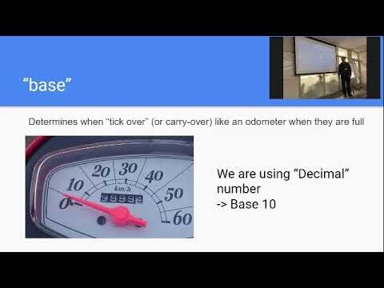

Last Updated: 2020-11-07
Making a binary glove
You need
Step 1. Using a marker, write the following numbers on the front side of your left glove starting with your thumb - 1, 2, 4, 8, 16
This side of your hand is the decimal side (numbers that we use everyday and are made up of 0,1,2,3,4,5,6,7,8, and 9s)
Step 2. Flip the glove over and write 1s on the tip of all your fingers and write 0 on knuckle Right an arrow from pinky to thumb
This side of your hand is the binary side.
Count the numbers 0-31
Step 1. Count the number from 0 to 31 with the binary glove.
Step 2. Count the number from 0 to 31 wihtout the binary glove.
The following videos explain more.